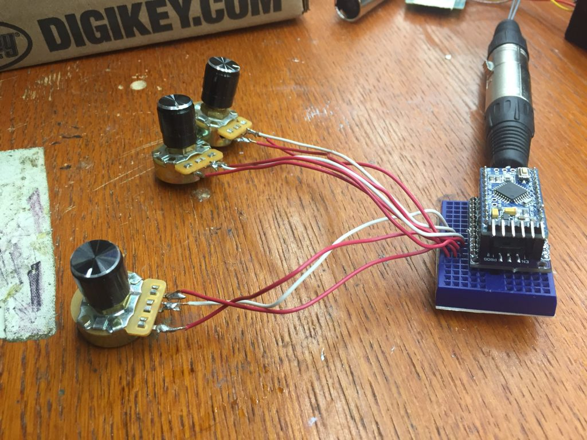

Arduino DMX 'Light Board', Mini Moving Light Hanging Hardware
Last updated
arduino mini-mover-shield
Over the past week, I got to the point with the mini moving light that I needed some way to consistently pump DMX into my prototypes to test their functionality.
Read more...